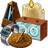
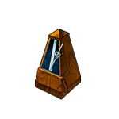
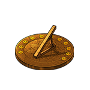
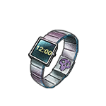
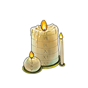
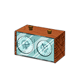

Получено: файл; исходный URL. Иллюстрация в отдельной статье ViveR_9 «Временная коллекция»; исходный файл без перекодирования. Авторство отдельно не установлено. Страница: источник.

Временная коллекция
Браузерная социальная версия; историческая статья; дата редакции неизвестна- Тип
- Коллекции
- Версия и дата
- Браузерная социальная версия; историческая статья; дата редакции неизвестна
Элементы коллекции















Данные по источнику · Браузерная социальная версия · историческая статья; дата редакции неизвестна
Предварительно: один материал, требуется сверка. Требуется сверка.
- Состав (источник Zombie-island)
- Метроном; Солнечные часы; Электронные часы; Свеча; Шахматные часы.
- Награда (источник Zombie-island)
- 1 Z-кнопка; 300 Опыт.
- Временную коллекцию может найти Звездочет
- Звездочет; Звездочет за зомбаксы.
- Временную коллекцию можно найти в ценностях и сокровищах
- Шапка фаната; Дом привидений; Дерево страсти; Цирковой шатер; Мавзолей; Шоколадное сердце.
- Временная коллекция попадается при колдовании Палочками
- Палочка-выручалочка.
Данные по источнику · браузерная версия; платформа не указана · дата редакции не установлена
Предварительно: Содержимое списка: изображения и колонки могут терять смысл при извлечении текста; отдельная страница и дата не проверены. Подписи alt иногда ошибочны.. Требуется сверка.
- Текст карточки из каталога
- 300 опыта и Z-кнопка Метроном Солнечные часы Электронные часы Свеча Шахматные часы Где можно найти : В шапке фаната Могут добыть зомби-звездочеты
Данные по источнику · Браузерная версия ВКонтакте; редакция не установлена · 05.10.2018 — дата публикации; дата последующей редакции неизвестна
Предварительно: Прочитана фанатская страница; вероятность находки и точная редакция игры не указаны. Схожесть с другими справочниками не установлена; независимость не предполагается.. Требуется сверка.
- Состав
- Солнечные часы; Метроном; Электронные часы; Свеча; Шахматные часы.
- Обмен
- 1 Z-Кнопка и 300 опыта. Название коллекции само по себе не указывает на временный срок.
- Получение
- Задание «Возвращение»; Осенний сюрприз, Шоколадное сердце, Сундук, Гол!, Фруктовый лёд, Карамельные яблоки, подарки и космические капсулы. Источник перечисляет три варианта Звездочёта.
- Палочками
- Октавий и Пончик-победитель.
- Строительство
- В том числе Машина времени, Зомби-Кактус, Звёздный автомат, Яхта, Батиплан, Мавзолей, Карета и несколько вариантов Праздничной и Бабушкиного ковра.
Связанные сущности
нет проверенных связей — требуется сверка.